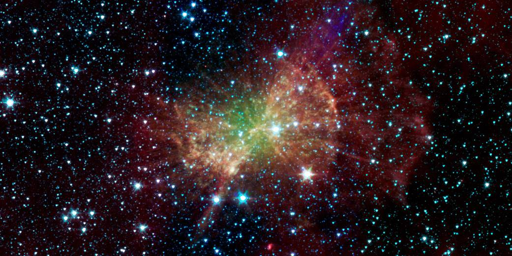

The Spitzer Space Telescope, commonly known as Spitzer, is one of NASA's most iconic observatories, dedicated to exploring the universe in infrared light. Launched in 2003, Spitzer is another member of NASA's "Great Observatories" program, joining the ranks of the Hubble Space Telescope, the Chandra X-ray Observatory, and the Compton Gamma Ray Observatory.
Infrared observation, as facilitated by Spitzer, is crucial for peering through cosmic dust and capturing the warmth of celestial bodies. This capability has allowed Spitzer to unveil previously hidden aspects of the universe, from distant galaxies in their early stages of formation to the detection of exoplanets and their atmospheres. Its unique vantage point, trailing Earth in a heliocentric orbit, ensures minimal interference from our planet's heat.
The Spitzer Space Telescope's mission, though initially planned for just 2.5 years, was extended multiple times due to its exceptional performance, finally concluding in January 2020. With a development and launch cost of around $800 million, Spitzer's contributions to astrophysics have been invaluable. Its discoveries, ranging from intricate details of our solar system to the far reaches of the universe, stand as a testament to human ingenuity and our enduring quest to understand the cosmos.
 Next